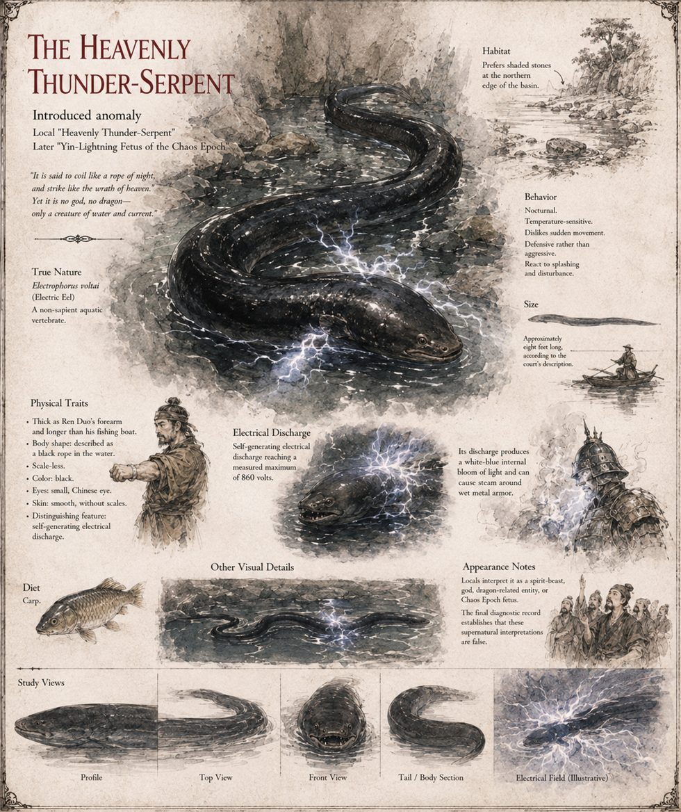

The Heavenly Thunder-Serpent
An Electric Eel, Eight Feet Long · the Catalyst of Case 4438
Electrophorus voltai: a scale-less electric eel, black, thick as a fisherman's forearm and longer than his boat, capable of a self-generated discharge of up to 860 volts. It is nocturnal, dislikes sudden movement, defends rather than attacks, and eats carp. It spends its early years beneath a fallen lintel in the flooded ruins below Nine Bends, then its captivity in a porcelain-and-gilt tank in the capital, retreating to the northern shadow whenever the crowd presses close. Everything the empire believes about it — the Nectar of the Thunder Dao, then the Yin-Lightning Fetus of the Chaos Epoch — is supplied by men who never once measure it. It was placed in the basin four years before the case opens by Elder Peng, and then simply left.
What actually kills the Yongkang Emperor is his own armor: wet steel sealed around a body, with no gap for the current to lose interest in. Its discharge weakens with every disturbance, and by the eleventh man in the Second Trial it has spent every volt it possessed across ten bodies and has nothing left to give him. It does not survive its last flooding; the order to fill the basin with stone is carried out by a crew paid to fill a basin, not to empty one first, and it dies within the season in stone-choked water. The chronicles record that it departed this lower world of its own accord.
“It is said to coil like a rope of night, and strike like the wrath of heaven. Yet it is no god, no dragon—only a creature of water and current.”
Appears in The Heavenly Thunder-Serpent